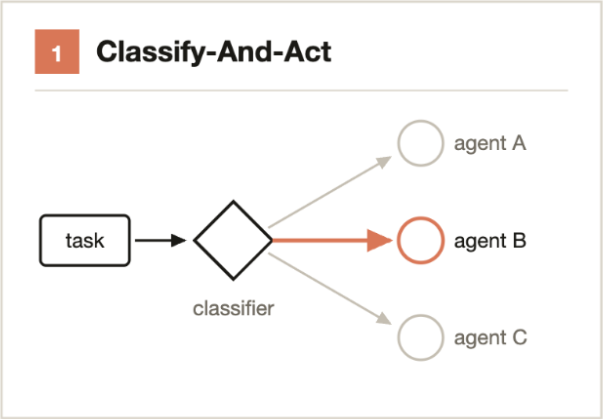
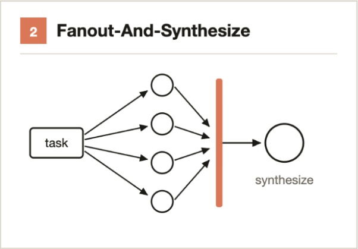
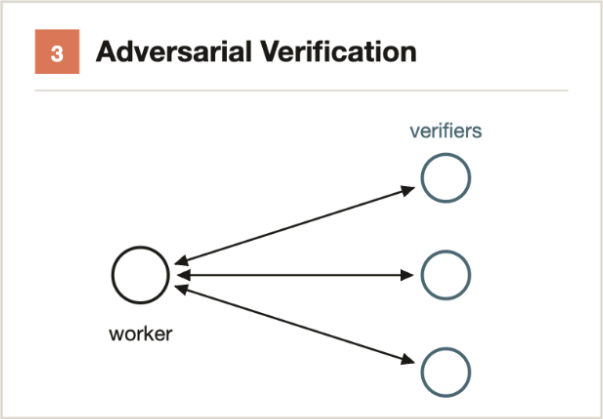
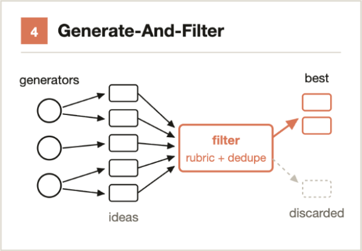
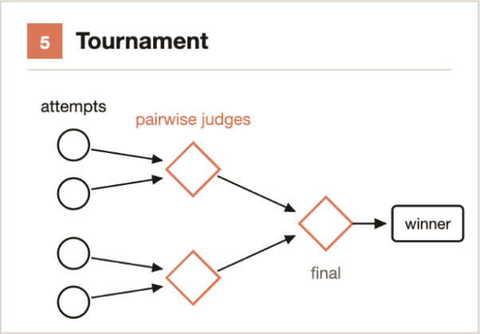
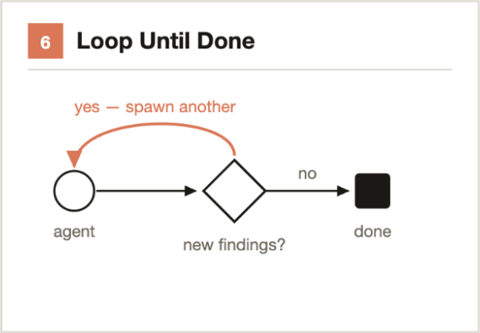

點任意處或按 Esc 關閉click anywhere or press Esc to close
這個 PATTERN 落在流程的哪一段WHERE THIS PATTERN SITS IN THE PIPELINE
亮起來的就是這一頁在講的位置 · 點任意處或按 Esc 關閉The lit stages are what this slide is about · click anywhere or press Esc to close
點任意處或按 Esc 關閉click anywhere or press Esc to close
Anthropic 的 dynamic workflows 一文點出六個 pattern。這一章一個 pattern 一頁：原文怎麼說、GGC 怎麼接，以及我們少了哪一個。 Anthropic's dynamic-workflows post names six patterns. One pattern per slide: what the post says, how GGC wires it, and the one we do not have.
5 / 6 已上線 · 1 個誠實的缺口 · 每張圖都對得上一個檔案 5 of 6 in production · 1 honest gap · every diagram traced to a file · gogox-claude @ a2f6d83
整條 pipeline 就這四段 — 每個框只講它幹嘛、裡面用到哪些 pattern。The whole pipeline is these four stages — what each does, and which patterns live inside.
讀票、判類型、動手調查，把 engineer note 寫回票上Reads the ticket, judges its type, investigates, writes an engineer note back
一票一個 worktree 平行跑，走 lane 寫 code，稽核過才開 PROne worktree per ticket in parallel; a lane writes the code, an audit gates the PR
PR 自動補上操作錄影；共用一台裝置 — 序列的 fan-outA PR gets its recording automatically; one shared device — a serial fan-out
rebase、讓另一個 agent 審這份 diff、修到審乾淨、等 CI 綠 — 停在 draft 人啟動Rebase, let another agent review the diff, fix until clean, wait for CI — stops at draft human-started
★ 人只剩兩件事：把需求講清楚，以及 AI 弄錯的時候介入。★ Two things are left for a human: making the requirement clear, and stepping in when the AI gets it wrong. 上次分享時，這中間還標著好幾個人工判斷點；其中一部分現在已經自動化掉了。At the last talk several human judgment gates were still marked in the middle; some of them are automated now. ↗ 上次分享的架構大圖 · 標了 4 個人工判斷點↗ last talk’s big picture · the 4 human gates are marked
ggx-investigate.md · ggx-dispatcher.md · ggx-work.md · ggx-demo.md · ggx-pr-review-loop/SKILL.md · workflows/*.workflow.js

“Use a classifier agent to decide on the type of task, and then route to different agents or behavior based on the task. Or, use a classifier at the end to determine output.”
用一個分類 agent 判斷任務屬於哪一類，再依類型路由到不同的 agent 或行為；也可以反過來，在最後用分類器決定輸出。
/route，只印出建議、不改任何狀態 —— 所以四個 orchestrator 共用同一顆。The classifier is its own command, /route: it prints a recommendation and mutates nothing — so four orchestrators share one copy.commands/dev/route.md · workflows/ggx-investigate-batch.workflow.js phase “classify”

“Split up a task into many smaller steps, run an agent on each step and then synthesize those results. … The synthesize step is a barrier—it waits for all the fan-out agents, then merges their structured outputs into one result.”
把任務切成很多小步，每一步跑一個 agent，最後合成。合成那一步是一道 barrier —— 它會等所有 fan-out 的 agent 都回來，再把它們的結構化輸出併成一個結果。
synth-agent 等三份 notes 全到才動，合出一份 spec — 這就是原文那句「等所有 agent，再併成一個結果」。The whole shape matches, barrier included. PM and Designer genuinely run in one parallel wave; synth-agent waits for all three notes and merges them into one spec set — exactly the post’s “waits for all the fan-out agents, then merges into one result”.commands/dev/port/explore.md · plan.md （並行那一段）(the parallel wave) · synth.md · 無 barrier 的版本：the barrier-free variant: workflows/dispatch-fanout.workflow.js

“For each spawned agent, run a separate spawned agent to adversarially verify its output against a rubric or criteria.”
每一個 spawn 出來的 agent，都另外 spawn 一個 agent 去對抗式地驗證它的輸出 —— 對照一份 rubric 或標準。
commands/design/ui-tweak/audit.md · agents/design/ui-verify-agent.md · agents/design/dev-reviewer.md

“Generate a number of ideas on a topic and then filter them by a rubric or by verification, dedupe duplicates and return only the highest quality, tested ideas.”
先就一個題目生出一批想法，再用 rubric 或驗證去過濾、去重，只回傳品質最高、驗過的那些。
/ggx-demo 用（expected-crux + intent）去重而不是設數量上限。The second half: filter by a rubric plus dedupe. The sweep uses a four-value rubric; /ggx-demo dedupes on (expected-crux + intent) rather than capping a count./spec-lint 九項 grep，零次模型呼叫，同時抓漏寫與幻覺。And the filter need not be a model: /spec-lint is nine grep checks, zero model calls, catching both omission and hallucination.workflows/ggx-investigate-batch.workflow.js phase “prescreen” · commands/dev/spec-lint.md · commands/dev/ggx-demo.md Step 1.9

“Instead of dividing the work, have agents compete on it. Spawn N agents that each attempt the same task using different approaches. Prompts or models then judge the results in a pairwise fashion using a judging agent until you have a winner.”
不是把工作切開，而是讓 agent 互相競爭：spawn N 個 agent，各用不同做法解同一個題目，再由 prompt 或模型兩兩比對，直到選出勝者。
掃過：swept: 4 workflow scripts · 67 command / stage files · 15 agent definitions

“For tasks with an unknown amount of work, loop spawning agents until a stop condition is met (no new findings, or no more errors in the logs) instead of a fixed number of passes.”
工作量未知的任務，不要跑固定次數，而是一直 spawn agent 直到滿足停止條件（沒有新發現，或 log 裡不再有錯誤）。
test-fix-loop 跑到全綠，不預設幾輪。The part we use: a stop condition instead of a fixed number of passes — test-fix-loop runs until the suite is green, with no preset round count./port:revise、/ggx-work 的 route→執行→再 route。Four more places share the shape: the ui-tweak repair loop (max 3), the PR review loop, /port:revise, and /ggx-work’s route → run → route again.skills/dev/test-fix-loop/SKILL.md · commands/design/ui-tweak/audit.md · skills/dev/ggx-pr-review-loop/SKILL.md
Anthropic 的 Building Effective Agents 說：agent 的流程只有幾種基本形狀 — 三個基本積木（Prompt Chaining · Routing · Parallelization）加兩個進階組合（Orchestrator-Subagents · Evaluator-Optimizer）。那六個 pattern 全部落在其中三塊。Anthropic's Building Effective Agents says agent workflows come in only a few basic shapes — three basic building blocks (Prompt Chaining · Routing · Parallelization) plus two advanced workflows (Orchestrator-Subagents · Evaluator-Optimizer). All six land on three of them.
剩下那兩塊 GGC 也有，只是不算在這六個裡：Prompt Chaining 就是「一步接一步」— 每條 lane 本身（start → figma → align → apply → verify → ship）；Orchestrator-Subagents 就是「有一個人負責分工」— dispatcher 那一層。 GGC uses the other two blocks too; they are just not among the six: Prompt Chaining is “one step after another” — each lane itself (start → figma → align → apply → verify → ship); Orchestrator-Subagents is “someone hands out the work” — the dispatcher layer.
所以這一章真正的重點只有一句SO THE WHOLE CHAPTER COMES DOWN TO ONE LINE
會寫 skill，你是寫功能的人；會用 pattern 把 skill 串成圖跟迴圈，你才是 loop / graph engineer。Pattern 對 workflow 的意義，就跟 design pattern 對程式一樣 — 串法早就有人歸納好了，不用每次重新發明。 Writing skills makes you the person who builds the parts. Using patterns to wire skills into graphs and loops is what makes you a loop / graph engineer. Patterns are to workflows what design patterns are to code — the ways of wiring are already catalogued; you never have to invent one.
args 其實是字串arrives as a string — 傳真的陣列進去，腳本收到的還是 JSON 文字。更重要的是把「空 roster」跟「有帶東西但 parse 成 0 列」分開：後者一個 agent 都沒生，看起來卻跟乾淨的 no-op 一模一樣。A live array still reached the script as JSON text. And separate “empty roster” from “carried work, parsed to zero rows” — the second spawns nothing and looks exactly like a clean no-op.
沒有時鐘，也沒有隨機No clock, no randomness — Date.now() 和 Math.random() 在腳本裡會直接丟錯，因為那會弄壞 resume。run key 和時間戳由呼叫端先鑄好再傳進去。Date.now() and Math.random() throw inside a script — they would break resume. Run keys and timestamps are minted by the caller.
摘要可能根本不會回來A summary can simply not arrive — 一個 agent 把整件事做完、拍完、發布完，orchestrator 只收到一則 idle 通知。沉默被讀成「什麼都沒發生」，於是重跑一次，變成重複。結構化回傳是機制；「記得先讀 tracker」只是散文。An agent built, captured and published its whole job; the orchestrator got only an idle notification. Silence read as “nothing happened”, so the recovery was a duplicate. Typed returns are a mechanism; “re-read the tracker first” was prose.
腳本不准放判斷The script holds no judgement — 曾經有 120 行的 rubric 以 JS 字串住在腳本裡，那是一條過期規則能躲過每一次清理的唯一原因。它被刪掉，不是改掉：現在每個 agent 只拿到一個 stage 檔。A 120-line rubric copy lived as a JS string and was the only reason a stale rule survived every cleanup. It was deleted, not edited.
長文用路徑回傳Return prose by path — note 內文、報告都以檔案路徑回傳，因為我們量到過沒有上限的欄位在傳輸中被截斷。短的結構化值才過邊界，文件留在磁碟上。Note bodies and reports come back as file paths — an unbounded field was measured being truncated in transport.
巢狀 spawn 看父層怎麼生出來Nesting depends on how the parent was spawned — Workflow 腳本生出來的 agent 沒有 Agent 工具，不能再往下生一層 — 前面每一張圖的形狀都是被這條限制決定的。要嵌套就得換成 headless claude -p，而且每次 Claude Code 更新都要重測。An agent spawned by a Workflow script has no Agent tool and cannot spawn its own — that shaped every diagram here. Real nesting needs headless claude -p, re-probed after every Claude Code update.
積木框架：Blocks: Anthropic, “Building Effective Agents” · claude-cookbooks/patterns/agents · 六個 pattern：patterns: “A harness for every task” · gogox-claude @ a2f6d83